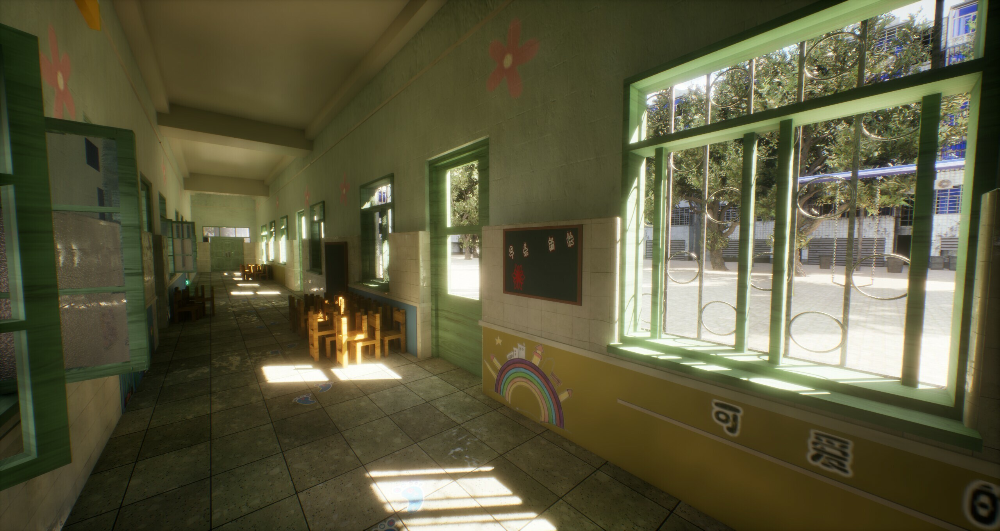

商业项目闭环
独立开发并上线 Steam 游戏，具备从玩法、编辑器、性能优化到商业验证的完整项目经历。

↓Profile
独立开发并上线 Steam 游戏，具备从玩法、编辑器、性能优化到商业验证的完整项目经历。
在剪映与 SLG 项目中实践并发调度、事件流治理、UI 组件化、状态机和跨端接口解耦。
熟练使用 Insights、Profiler 和防御性编程手段定位瓶颈，落地对象池、实例化渲染、GC 优化。
Selected Work
独立游戏《奇怪的梦》 · 2024年12月 - 2025年10月 · UE / C++ 开发工程师
UE / C++ · Steam · 独立游戏
商业成绩与架构设计：独立使用 UE 引擎开发并上线 Steam，获 5k+ 愿望单，至今销量 2k+ 份。深入理解 UE Gameplay 框架，采用组件化设计 UI 与核心逻辑，实现蓝图与底层数据的深度解耦。
内存优化与数据结构压缩： 独立设计并实现 UGC 关卡编辑器。为解决海量对象导致的性能开销，设计 C++ 自定义紧凑结构体，采用特定数据压缩机制。利用整型定点数替代浮点数处理空间变换，彻底解决了由于 Float 精度丢失导致的判定 Bug 。
引擎底层机制与内存管理： 深入理解 UE Gameplay 框架，采用组件化思想解耦 UI 与核心逻辑。熟练运用 C++ 智能指针进行非 UObject 数据的生命周期与内存安全管理。
性能调优： 熟练使用 Unreal Insights 定位性能瓶颈。针对海量实体设计并落地了基于 C++ 的对象池技术。结合实例化渲染技术，有效减少 Draw Call，将千级 Actor 复杂关卡的帧率提升 80%+，具备严谨的性能优化意识。
联机同步架构： 精准处理 RPC 机制与状态同步，实现稳定的 P2P 多人联机架构。
Experience
C++ 并发调度与事件流治理：参与底层 Observable 事件驱动模块维护，基于 SharedMutex 完善并发保护，通过宿主销毁自动解绑规避悬垂指针崩溃。协助封装 TaskRunner 与 Future<T> 异步组件，并利用宏引入 Debug 模式下的主线程阻塞强制校验，提升跨端渲染的线程安全性。
跨端架构重构与工程基建完善：维护 Android 至 C++ 的 Builder 模式能力注入链路，实现跨端接口解耦。运用“断言即控制”思想封装 BASSERT 宏统一异常拦截与埋点；落地基于 ConcurrentHashMap+AtomicInteger 的限频日志抽样机制，有效降低高频回调下的性能损耗。
复杂状态机管理与协程并发实践：在业务线深入应用基于 Kotlin 协程的轻量级 Redux 状态机。利用 StateFlow 与 CAS 自旋机制重构状态更新，解决高频交互下的并发丢状态问题；结合协程生命周期封装 waitConditionThenRun 按需执行机制，精简代码并天然防范内存泄漏。
端侧渲染优化与防御性编程：参与 LayerManager 图层镜像中枢迭代，熟悉渲染节点与业务逻辑解耦。在自定义 View 开发中落地“尺寸变化按需重算”策略减少过度绘制。针对弱类型下发导致的端侧崩溃，封装宽容度自适应的 Gson 组件并在编译期拦截不安全泛型调用，大幅提升线上容错率。
六边形网格寻路算法落地：基于六边形网格坐标系构建寻路模块。引入 A* 算法并针对锯齿路径进行平滑优化；结合 JPS 算法优化大地图长距离寻路性能，显著降低内存占用与 CPU 寻路耗时。
性能调优：基于 ECS 思想配合事件总线系统，剥离数据与表现，实现业务模块的高度解耦。针对游戏运行时卡顿，使用 Profiler 精准定位并修复了严重 GC 问题；利用对象池机制大幅削减高频实体的动态创建/销毁开销。
UI 组件化重构：主导核心 UI 模块的组件化重构，大幅削减冗余代码，提升逻辑复用率并统一了视觉与交互规范。
Skills
编程语言：熟练掌握 C++17 / Lua 语言，具备扎实的 OOP 思想，熟练使用 STL 及各类基础数据结构与算法。
游戏引擎：拥有超过 1 年 UE 商业项目实战经验，掌握 C++ 与蓝图混合开发及 Gameplay 框架；熟悉 UE 的状态同步、内存管理、UMG 开发与反射机制。熟悉 Unity 及 XLua 和 C# 混合开发。
核心技术：掌握多线程并发安全控制、游戏性能调优（Profiler、Draw Call、GC 优化）和网络同步。
工程与基础：熟悉计算机网络、操作系统基础知识；了解图形学与渲染管线基础；熟练使用 Git 等团队协作工具。
AI技能：深度运用例如 Codex、Cursor 的编程工具，清晰 AI 协作的边界，并在独游和实习项目各个环节中大幅提升长期效率。
Education
主修课程：数据结构与算法、计算机网络、操作系统、计算机组成原理。
荣誉与实践：蓝桥杯国赛优秀奖；英语六级；参与过大学生创新创业大赛；自媒体全网累计7k+粉丝。
实验室项目：主导过从零搭建的 AIGC 企业应用项目，担任组长。